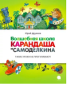

Волшебная школа Карандаша и Самоделкина

Добро пожаловать в необыкновенную и знаменитую школу! Главный учитель Карандаш и мастер на все руки Самоделкин приглашают на уроки Фантазии, Смеха и Необыкновенных путешествий. В этой школе учиться одно удовольствие: из отметок ставят только пятёрки, на завтраки дают конфеты, а учителя- самые настоящие волшебники. Однажды среди учеников появился новенький мальчик, даже не мальчик, а какое-то чучело-бабучило - до того он был лохматым и чумазым. "Разве может такой учиться вместе с нами?!" - смеялись дети. Но доброму Карандашу было не до смеха - дразнилкам в его школе никогда не учили! И он решил преподать самый главный урок - урок Доброты. P. S. А в это время к школе подбирались морские пираты...